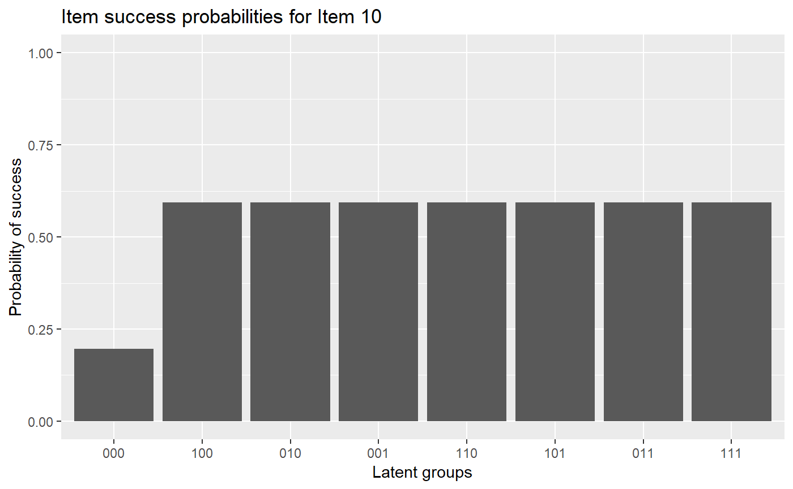
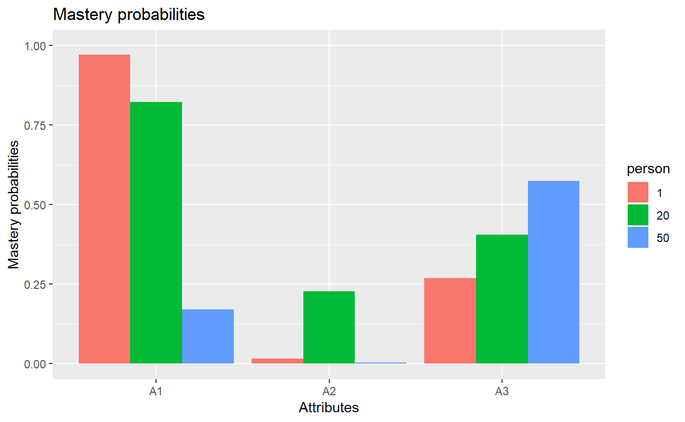

vignettes/OnlineExercises/DINO_example.Rmd
DINO_example.Rmdlibrary(GDINA)## ==============================================
## GDINA Package for Cognitive Diagnosis Modeling
## Version 2.1.15 (2018-6-6)
## ==============================================# A simulated data in GDINA package
dat <- sim10GDINA$simdat
Q <- sim10GDINA$simQ
# Fit DINO model
est <- GDINA(dat = dat, Q = Q, model = "DINO")##
Iter = 1 Max. abs. change = 0.41819 Deviance = 12821.161
Iter = 2 Max. abs. change = 0.02952 Deviance = 12505.097
Iter = 3 Max. abs. change = 0.03214 Deviance = 12463.574
Iter = 4 Max. abs. change = 0.02902 Deviance = 12438.333
Iter = 5 Max. abs. change = 0.02426 Deviance = 12419.151
Iter = 6 Max. abs. change = 0.01964 Deviance = 12404.175
Iter = 7 Max. abs. change = 0.01578 Deviance = 12392.396
Iter = 8 Max. abs. change = 0.01275 Deviance = 12383.033
Iter = 9 Max. abs. change = 0.01043 Deviance = 12375.515
Iter = 10 Max. abs. change = 0.00930 Deviance = 12369.431
Iter = 11 Max. abs. change = 0.00852 Deviance = 12364.490
Iter = 12 Max. abs. change = 0.00779 Deviance = 12360.472
Iter = 13 Max. abs. change = 0.00711 Deviance = 12357.205
Iter = 14 Max. abs. change = 0.00647 Deviance = 12354.553
Iter = 15 Max. abs. change = 0.00588 Deviance = 12352.404
Iter = 16 Max. abs. change = 0.00532 Deviance = 12350.666
Iter = 17 Max. abs. change = 0.00481 Deviance = 12349.263
Iter = 18 Max. abs. change = 0.00434 Deviance = 12348.133
Iter = 19 Max. abs. change = 0.00390 Deviance = 12347.223
Iter = 20 Max. abs. change = 0.00351 Deviance = 12346.492
Iter = 21 Max. abs. change = 0.00315 Deviance = 12345.905
Iter = 22 Max. abs. change = 0.00282 Deviance = 12345.434
Iter = 23 Max. abs. change = 0.00253 Deviance = 12345.057
Iter = 24 Max. abs. change = 0.00226 Deviance = 12344.755
Iter = 25 Max. abs. change = 0.00202 Deviance = 12344.512
Iter = 26 Max. abs. change = 0.00180 Deviance = 12344.318
Iter = 27 Max. abs. change = 0.00161 Deviance = 12344.162
Iter = 28 Max. abs. change = 0.00144 Deviance = 12344.037
Iter = 29 Max. abs. change = 0.00128 Deviance = 12343.937
Iter = 30 Max. abs. change = 0.00114 Deviance = 12343.857
Iter = 31 Max. abs. change = 0.00102 Deviance = 12343.792
Iter = 32 Max. abs. change = 0.00090 Deviance = 12343.740
Iter = 33 Max. abs. change = 0.00080 Deviance = 12343.698
Iter = 34 Max. abs. change = 0.00072 Deviance = 12343.664
Iter = 35 Max. abs. change = 0.00064 Deviance = 12343.637
Iter = 36 Max. abs. change = 0.00058 Deviance = 12343.615
Iter = 37 Max. abs. change = 0.00054 Deviance = 12343.597
Iter = 38 Max. abs. change = 0.00050 Deviance = 12343.582
Iter = 39 Max. abs. change = 0.00046 Deviance = 12343.570
Iter = 40 Max. abs. change = 0.00043 Deviance = 12343.560
Iter = 41 Max. abs. change = 0.00040 Deviance = 12343.552
Iter = 42 Max. abs. change = 0.00037 Deviance = 12343.546
Iter = 43 Max. abs. change = 0.00035 Deviance = 12343.540
Iter = 44 Max. abs. change = 0.00033 Deviance = 12343.536
Iter = 45 Max. abs. change = 0.00031 Deviance = 12343.532
Iter = 46 Max. abs. change = 0.00029 Deviance = 12343.529
Iter = 47 Max. abs. change = 0.00027 Deviance = 12343.526
Iter = 48 Max. abs. change = 0.00025 Deviance = 12343.524
Iter = 49 Max. abs. change = 0.00024 Deviance = 12343.522
Iter = 50 Max. abs. change = 0.00022 Deviance = 12343.520
Iter = 51 Max. abs. change = 0.00021 Deviance = 12343.519
Iter = 52 Max. abs. change = 0.00020 Deviance = 12343.518
Iter = 53 Max. abs. change = 0.00019 Deviance = 12343.517
Iter = 54 Max. abs. change = 0.00018 Deviance = 12343.516
Iter = 55 Max. abs. change = 0.00017 Deviance = 12343.515
Iter = 56 Max. abs. change = 0.00016 Deviance = 12343.515
Iter = 57 Max. abs. change = 0.00015 Deviance = 12343.514
Iter = 58 Max. abs. change = 0.00014 Deviance = 12343.513
Iter = 59 Max. abs. change = 0.00014 Deviance = 12343.513
Iter = 60 Max. abs. change = 0.00013 Deviance = 12343.513
Iter = 61 Max. abs. change = 0.00012 Deviance = 12343.512
Iter = 62 Max. abs. change = 0.00012 Deviance = 12343.512
Iter = 63 Max. abs. change = 0.00011 Deviance = 12343.512
Iter = 64 Max. abs. change = 0.00011 Deviance = 12343.511
Iter = 65 Max. abs. change = 0.00010 Deviance = 12343.511
Iter = 66 Max. abs. change = 0.00010 Deviance = 12343.511#####################################
#
# Summary Information
#
#####################################
# print estimation information
est## Call:
## GDINA(dat = dat, Q = Q, model = "DINO")
##
## GDINA version 2.1.15 (2018-6-6)
## ===============================================
## Data
## -----------------------------------------------
## # of individuals groups items
## 1000 1 10
## ===============================================
## Model
## -----------------------------------------------
## Fitted model(s) = DINO
## Attribute structure = saturated
## Attribute level = Dichotomous
## ===============================================
## Estimation
## -----------------------------------------------
## Number of iterations = 66
## For the final iteration:
## Max abs change in item success prob. = 0.0001
## Max abs change in mixing proportions = 0.0000
## Change in -2 log-likelihood = 0.0002
## Time used = 0.1144 secs# summary information
summary(est)##
## Test Fit Statistics
##
## Loglik = -6171.76
## AIC = 12397.51 | penalty = 54
## BIC = 12530.02 | penalty = 186.51
## # par = 27
##
## Attribute Prevalence
##
## Level0 Level1
## A1 0.6875 0.3125
## A2 0.7219 0.2781
## A3 0.6623 0.3377AIC(est) #AIC## [1] 12397.51BIC(est) #BIC## [1] 12530.02logLik(est) #log-likelihood value## 'log Lik.' -6171.755 (df=27)deviance(est) # deviance: -2 log-likelihood## [1] 12343.51npar(est) # number of parameters## No. of total parameters = 27
## No. of item parameters = 20
## No. of population parameters = 7nobs(est) # number of observations## [1] 1000# discrimination indices
extract(est, "discrim")## P(1)-P(0) GDI
## Item 1 0.6288371 0.08495890
## Item 2 0.6834178 0.09376774
## Item 3 0.6555150 0.09611027
## Item 4 0.5113329 0.06528331
## Item 5 0.4209867 0.04424581
## Item 6 0.4729448 0.05583020
## Item 7 0.5369724 0.07199438
## Item 8 0.3803761 0.03611392
## Item 9 0.5319230 0.07063711
## Item 10 0.3980970 0.03647602#####################################
#
# structural parameters
#
#####################################
coef(est) # item probabilities of success for each reduced latent class## $`Item 1`
## P(0) P(1)
## 0.3535 0.9823
##
## $`Item 2`
## P(0) P(1)
## 0.2709 0.9543
##
## $`Item 3`
## P(0) P(1)
## 0.2956 0.9511
##
## $`Item 4`
## P(00) P(10) P(01) P(11)
## 0.1903 0.7016 0.7016 0.7016
##
## $`Item 5`
## P(00) P(10) P(01) P(11)
## 0.0764 0.4973 0.4973 0.4973
##
## $`Item 6`
## P(00) P(10) P(01) P(11)
## 0.4881 0.9610 0.9610 0.9610
##
## $`Item 7`
## P(00) P(10) P(01) P(11)
## 0.150 0.687 0.687 0.687
##
## $`Item 8`
## P(00) P(10) P(01) P(11)
## 0.1862 0.5666 0.5666 0.5666
##
## $`Item 9`
## P(00) P(10) P(01) P(11)
## 0.1770 0.7089 0.7089 0.7089
##
## $`Item 10`
## P(000) P(100) P(010) P(001) P(110) P(101) P(011) P(111)
## 0.1959 0.5940 0.5940 0.5940 0.5940 0.5940 0.5940 0.5940coef(est, withSE = TRUE) # item probabilities of success & standard errors## $`Item 1`
## P(0) P(1)
## Est. 0.3535 0.9823
## S.E. 0.0220 0.0202
##
## $`Item 2`
## P(0) P(1)
## Est. 0.2709 0.9543
## S.E. 0.0219 0.0376
##
## $`Item 3`
## P(0) P(1)
## Est. 0.2956 0.9511
## S.E. 0.0226 0.0259
##
## $`Item 4`
## P(00) P(10) P(01) P(11)
## Est. 0.1903 0.7016 0.7016 0.7016
## S.E. 0.0235 0.0248 0.0248 0.0248
##
## $`Item 5`
## P(00) P(10) P(01) P(11)
## Est. 0.0764 0.4973 0.4973 0.4973
## S.E. 0.0146 0.0262 0.0262 0.0262
##
## $`Item 6`
## P(00) P(10) P(01) P(11)
## Est. 0.4881 0.9610 0.9610 0.9610
## S.E. 0.0276 0.0134 0.0134 0.0134
##
## $`Item 7`
## P(00) P(10) P(01) P(11)
## Est. 0.1500 0.687 0.687 0.687
## S.E. 0.0225 0.025 0.025 0.025
##
## $`Item 8`
## P(00) P(10) P(01) P(11)
## Est. 0.1862 0.5666 0.5666 0.5666
## S.E. 0.0231 0.0258 0.0258 0.0258
##
## $`Item 9`
## P(00) P(10) P(01) P(11)
## Est. 0.1770 0.7089 0.7089 0.7089
## S.E. 0.0219 0.0262 0.0262 0.0262
##
## $`Item 10`
## P(000) P(100) P(010) P(001) P(110) P(101) P(011) P(111)
## Est. 0.1959 0.5940 0.5940 0.5940 0.5940 0.5940 0.5940 0.5940
## S.E. 0.0262 0.0219 0.0219 0.0219 0.0219 0.0219 0.0219 0.0219coef(est, what = "delta") # delta parameters## $`Item 1`
## d0 d1
## 0.3535 0.6288
##
## $`Item 2`
## d0 d1
## 0.2709 0.6834
##
## $`Item 3`
## d0 d1
## 0.2956 0.6555
##
## $`Item 4`
## d0 d1
## 0.1903 0.5113
##
## $`Item 5`
## d0 d1
## 0.0764 0.4210
##
## $`Item 6`
## d0 d1
## 0.4881 0.4729
##
## $`Item 7`
## d0 d1
## 0.150 0.537
##
## $`Item 8`
## d0 d1
## 0.1862 0.3804
##
## $`Item 9`
## d0 d1
## 0.1770 0.5319
##
## $`Item 10`
## d0 d1
## 0.1959 0.3981coef(est, what = "delta", withSE = TRUE) # delta parameters## $`Item 1`
## d0 d1
## Est. 0.3535 0.6288
## S.E. 0.0220 0.0335
##
## $`Item 2`
## d0 d1
## Est. 0.2709 0.6834
## S.E. 0.0219 0.0504
##
## $`Item 3`
## d0 d1
## Est. 0.2956 0.6555
## S.E. 0.0226 0.0389
##
## $`Item 4`
## d0 d1
## Est. 0.1903 0.5113
## S.E. 0.0235 0.0380
##
## $`Item 5`
## d0 d1
## Est. 0.0764 0.4210
## S.E. 0.0146 0.0321
##
## $`Item 6`
## d0 d1
## Est. 0.4881 0.4729
## S.E. 0.0276 0.0336
##
## $`Item 7`
## d0 d1
## Est. 0.1500 0.5370
## S.E. 0.0225 0.0376
##
## $`Item 8`
## d0 d1
## Est. 0.1862 0.3804
## S.E. 0.0231 0.0382
##
## $`Item 9`
## d0 d1
## Est. 0.1770 0.5319
## S.E. 0.0219 0.0382
##
## $`Item 10`
## d0 d1
## Est. 0.1959 0.3981
## S.E. 0.0262 0.0373coef(est, what = "gs") # guessing and slip parameters## guessing slip
## Item 1 0.3535 0.0177
## Item 2 0.2709 0.0457
## Item 3 0.2956 0.0489
## Item 4 0.1903 0.2984
## Item 5 0.0764 0.5027
## Item 6 0.4881 0.0390
## Item 7 0.1500 0.3130
## Item 8 0.1862 0.4334
## Item 9 0.1770 0.2911
## Item 10 0.1959 0.4060coef(est, what = "gs", withSE = TRUE) # guessing and slip parameters & standard errors## guessing slip SE[guessing] SE[slip]
## Item 1 0.3535 0.0177 0.0220 0.0202
## Item 2 0.2709 0.0457 0.0219 0.0376
## Item 3 0.2956 0.0489 0.0226 0.0259
## Item 4 0.1903 0.2984 0.0235 0.0248
## Item 5 0.0764 0.5027 0.0146 0.0262
## Item 6 0.4881 0.0390 0.0276 0.0134
## Item 7 0.1500 0.3130 0.0225 0.0250
## Item 8 0.1862 0.4334 0.0231 0.0258
## Item 9 0.1770 0.2911 0.0219 0.0262
## Item 10 0.1959 0.4060 0.0262 0.0219# Estimated proportions of latent classes
coef(est,"lambda")## p(000) p(100) p(010) p(001) p(110) p(101) p(011) p(111)
## 0.3591 0.1595 0.1232 0.1209 0.0205 0.0823 0.0843 0.0502# success probabilities for each latent class
coef(est,"LCprob")## 000 100 010 001 110 101 011 111
## Item 1 0.3535 0.9823 0.3535 0.3535 0.9823 0.9823 0.3535 0.9823
## Item 2 0.2709 0.2709 0.9543 0.2709 0.9543 0.2709 0.9543 0.9543
## Item 3 0.2956 0.2956 0.2956 0.9511 0.2956 0.9511 0.9511 0.9511
## Item 4 0.1903 0.7016 0.1903 0.7016 0.7016 0.7016 0.7016 0.7016
## Item 5 0.0764 0.0764 0.4973 0.4973 0.4973 0.4973 0.4973 0.4973
## Item 6 0.4881 0.9610 0.9610 0.4881 0.9610 0.9610 0.9610 0.9610
## Item 7 0.1500 0.6870 0.1500 0.6870 0.6870 0.6870 0.6870 0.6870
## Item 8 0.1862 0.5666 0.5666 0.1862 0.5666 0.5666 0.5666 0.5666
## Item 9 0.1770 0.1770 0.7089 0.7089 0.7089 0.7089 0.7089 0.7089
## Item 10 0.1959 0.5940 0.5940 0.5940 0.5940 0.5940 0.5940 0.5940#####################################
#
# person parameters
#
#####################################
head(personparm(est)) # EAP estimates of attribute profiles## A1 A2 A3
## [1,] 1 0 0
## [2,] 1 1 1
## [3,] 1 1 1
## [4,] 1 0 1
## [5,] 0 0 1
## [6,] 0 0 0head(personparm(est, what = "MAP")) # MAP estimates of attribute profiles## A1 A2 A3 multimodes
## 1 1 0 0 FALSE
## 2 1 1 1 FALSE
## 3 1 1 1 FALSE
## 4 1 0 1 FALSE
## 5 0 0 1 FALSE
## 6 0 0 0 FALSEhead(personparm(est, what = "MLE")) # MLE estimates of attribute profiles## A1 A2 A3 multimodes
## 1 1 0 0 FALSE
## 2 1 1 1 FALSE
## 3 1 1 1 FALSE
## 4 1 0 1 FALSE
## 5 0 0 1 FALSE
## 6 0 0 0 FALSE#####################################
#
# Plots
#
#####################################
#plot item response functions for item 10
plot(est, item = 10)
plot(est, item = 10, withSE = TRUE) # with error bars#plot mastery probability for individuals 1, 20 and 50
plot(est, what = "mp", person = c(1, 20, 50))
#####################################
#
# Advanced elements
#
#####################################
head(indlogLik(est)) # individual log-likelihood## [,1] [,2] [,3] [,4] [,5] [,6]
## [1,] -10.433497 -3.685254 -11.951775 -6.976752 -8.103172 -4.164380
## [2,] -13.916465 -7.168222 -8.922976 -7.977415 -5.074372 -5.165043
## [3,] -11.118278 -10.208671 -7.233186 -6.848045 -5.687764 -5.778434
## [4,] -13.051261 -8.095711 -11.452870 -6.477847 -7.604267 -3.665475
## [5,] -6.894879 -11.555602 -15.201296 -5.230827 -15.973520 -12.034728
## [6,] -6.334859 -7.663064 -11.105822 -11.538870 -12.080982 -11.979183
## [,7] [,8]
## [1,] -7.956709 -6.934613
## [2,] -4.927909 -3.905813
## [3,] -5.541301 -4.519204
## [4,] -7.457804 -6.435708
## [5,] -11.206230 -14.804960
## [6,] -15.771512 -14.749416head(indlogPost(est)) # individual log-posterior## [,1] [,2] [,3] [,4] [,5] [,6]
## [1,] -6.2527793 -0.3161235 -8.841243 -3.8848929 -6.786194 -1.4567089
## [2,] -8.9083718 -2.9717160 -4.985068 -4.0581810 -2.930019 -1.6299970
## [3,] -5.5923858 -5.4943657 -2.777479 -2.4110121 -3.025611 -1.7255893
## [4,] -8.0768934 -3.9329309 -7.548688 -2.5923385 -5.493640 -0.1641545
## [5,] -1.0247180 -6.4970281 -10.401321 -0.4495249 -12.967099 -7.6376134
## [6,] -0.1164285 -2.2562207 -5.957576 -6.4092987 -8.726291 -7.2337995
## [,7] [,8]
## [1,] -5.225306 -4.7215927
## [2,] -1.369131 -0.8654179
## [3,] -1.464723 -0.9610102
## [4,] -3.932752 -3.4290383
## [5,] -6.785384 -10.9024973
## [6,] -11.002397 -10.4986833extract(est,"designmatrix") #design matrix## [[1]]
## [,1] [,2]
## [1,] 1 0
## [2,] 1 1
##
## [[2]]
## [,1] [,2]
## [1,] 1 0
## [2,] 1 1
##
## [[3]]
## [,1] [,2]
## [1,] 1 0
## [2,] 1 1
##
## [[4]]
## [,1] [,2]
## [1,] 1 0
## [2,] 1 1
## [3,] 1 1
## [4,] 1 1
##
## [[5]]
## [,1] [,2]
## [1,] 1 0
## [2,] 1 1
## [3,] 1 1
## [4,] 1 1
##
## [[6]]
## [,1] [,2]
## [1,] 1 0
## [2,] 1 1
## [3,] 1 1
## [4,] 1 1
##
## [[7]]
## [,1] [,2]
## [1,] 1 0
## [2,] 1 1
## [3,] 1 1
## [4,] 1 1
##
## [[8]]
## [,1] [,2]
## [1,] 1 0
## [2,] 1 1
## [3,] 1 1
## [4,] 1 1
##
## [[9]]
## [,1] [,2]
## [1,] 1 0
## [2,] 1 1
## [3,] 1 1
## [4,] 1 1
##
## [[10]]
## [,1] [,2]
## [1,] 1 0
## [2,] 1 1
## [3,] 1 1
## [4,] 1 1
## [5,] 1 1
## [6,] 1 1
## [7,] 1 1
## [8,] 1 1extract(est,"linkfunc") #link functions## [1] "identity" "identity" "identity" "identity" "identity" "identity"
## [7] "identity" "identity" "identity" "identity"sessionInfo()## R version 3.5.1 (2018-07-02)
## Platform: i386-w64-mingw32/i386 (32-bit)
## Running under: Windows 10 x64 (build 17134)
##
## Matrix products: default
##
## locale:
## [1] LC_COLLATE=English_United States.1252
## [2] LC_CTYPE=English_United States.1252
## [3] LC_MONETARY=English_United States.1252
## [4] LC_NUMERIC=C
## [5] LC_TIME=English_United States.1252
##
## attached base packages:
## [1] stats graphics grDevices utils datasets methods base
##
## other attached packages:
## [1] GDINA_2.1.15
##
## loaded via a namespace (and not attached):
## [1] commonmark_1.5 digest_0.6.15 htmltools_0.3.6
## [4] R6_2.2.2 scales_1.0.0 Rsolnp_1.16
## [7] assertthat_0.2.0 rprojroot_1.3-2 grid_3.5.1
## [10] fs_1.2.5 stringr_1.3.1 knitr_1.20
## [13] numDeriv_2016.8-1 munsell_0.5.0 desc_1.2.0
## [16] shinydashboard_0.7.0 pillar_1.3.0 tibble_1.4.2
## [19] compiler_3.5.1 httpuv_1.4.5 mime_0.5
## [22] xml2_1.2.0 labeling_0.3 pkgdown_1.1.0
## [25] roxygen2_6.1.0 later_0.7.3 shiny_1.1.0
## [28] rstudioapi_0.7 ggplot2_3.0.0 MASS_7.3-50
## [31] plyr_1.8.4 stringi_1.2.4 magrittr_1.5
## [34] rmarkdown_1.10 evaluate_0.11 gtable_0.2.0
## [37] rlang_0.2.1 colorspace_1.3-2 promises_1.0.1
## [40] yaml_2.2.0 tools_3.5.1 alabama_2015.3-1
## [43] parallel_3.5.1 truncnorm_1.0-8 nloptr_1.0.4
## [46] xtable_1.8-2 lazyeval_0.2.1 crayon_1.3.4
## [49] backports_1.1.2 memoise_1.1.0 Rcpp_0.12.18